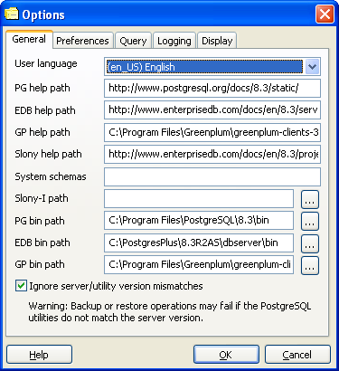

pgAdmin Options - Tab 1 (General)

- Language - When you first started pgAdmin, it will have allowed
you to select the language it should display. This setting may be changed
here.
- SQL help site - SQL help may be accessed by pressing F1
within pgAdmin, which will display the most appropriate PostgreSQL
helpfile for the current object selection or open dialogue. This
setting allows you to modify the location under which those files
may be found. You may specify a local directory path, or a URL if
you wish to use documents on a website. pgAdmin expects to find
files at this location from the standard PostgreSQL documentation
set. By default, this setting is left blank in which case pgAdmin
will use the help files in the included HTML Help system. If you
set a value here, pgAdmin will look for normal HTML files at the
location specified.
- HTTP proxy- Use a proxy to access the web. This must be
provided in the form host:port or left blank if not proxy is
used.
- System schemas- You can suppress the display of additional schemas,
by declaring them a system schema. This field takes a list of comma separated strings.
- Slony-I path- To enable pgAdmin III to create Slony-I replication clusters
from scratch, you need to enter the path to the Slony-I script installation directory here. If no
valid scripts can be found, only joining existing clusters is possible.
- PG bin path- This should be set to the path to the standard PostgreSQL pg_dump, pg_restore
and pg_dumpall utilities. pgAdmin will use these for backing up and restoring your PostgreSQL databases.
If this path is not set, pgAdmin will attempt to find the utilities in it's installation directory,
the 'hint' directory set by a local PostgreSQL installation (on Windows) and in the system path.
- EDB bin path- This should be set to the path to the EnterpriseDB pg_dump, pg_restore
and pg_dumpall utilities. pgAdmin will use these for backing up and restoring your EnterpriseDB databases.
If this path is not set, pgAdmin will attempt to find the utilities in standard locations used by
EnterpriseDB.